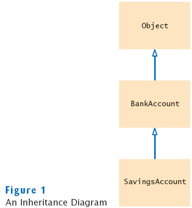
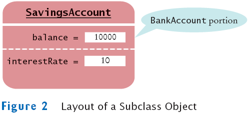
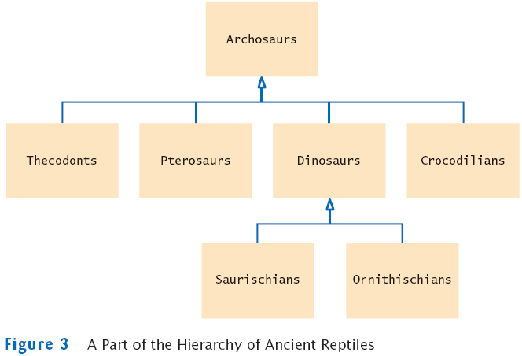
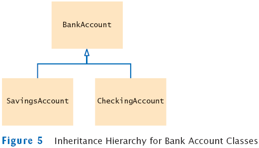
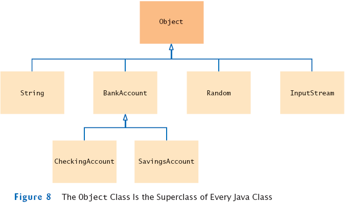
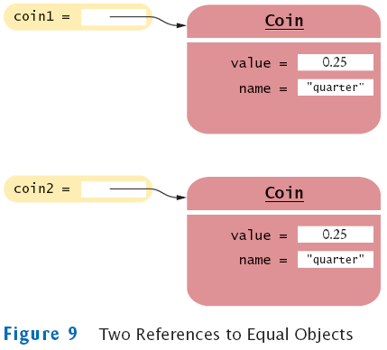
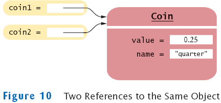
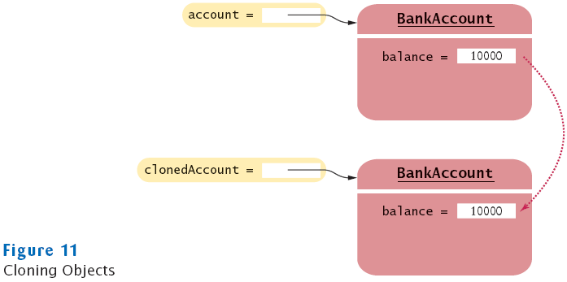
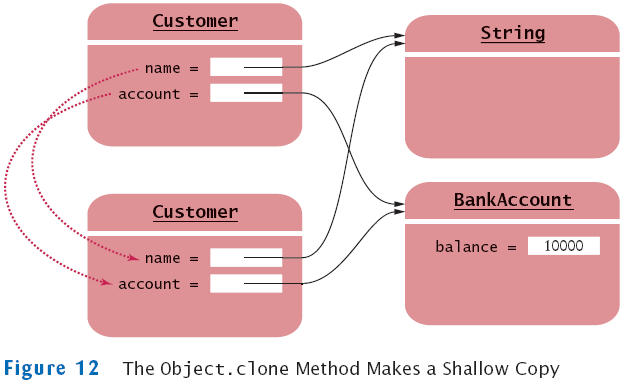

Chapter 13
Inheritance
Chapter Goals
- To learn about inheritance
- To understand how to inherit and override superclass methods
- To be able to invoke superclass constructors
- To learn about protected and package access control
- To understand the common superclass Object and to override its toString and equals methods
An Introduction to Inheritance
- Inheritance: extend classes by adding methods and fields
- Example: Savings account = bank account with interest
class SavingsAccount extends BankAccount
{
new methods
new instance fields
}
- SavingsAccount automatically inherits all methods and instance fields of BankAccount
SavingsAccount collegeFund = new SavingsAccount(10);
// Savings account with 10% interest
collegeFund.deposit(500);
// OK to use BankAccount method with SavingsAccount object
- Extended class = superclass (BankAccount), extending class = subclass (Savings)
- Inheriting from class ≠ implementing interface: subclass inherits behavior and state
- One advantage of inheritance is code reuse
An Inheritance Diagram
- Every class extends the Object class either directly or indirectly

An Introduction to Inheritance
Layout of a Subclass Object
- SavingsAccount object inherits the balance instance field from BankAccount, and gains one additional instance field: interestRate:

Syntax 13.1: Inheritance
| |
class SubclassName extends SuperclassName
{
methods
instance fields
}
|
Example:
| |
public class SavingsAccount extends BankAccount
{
public SavingsAccount(double rate)
{
interestRate = rate;
}
public void addInterest()
{
double interest = getBalance() * interestRate / 100;
deposit(interest);
}
private double interestRate;
}
|
Purpose:
To define a new class that inherits from an existing class, and define
the methods and instance fields that are added in the new class.
|
Self Check
- Which instance fields does an object of class SavingsAccount have?
- Name four methods that you can apply to SavingsAccount objects
- If the class Manager extends the class Employee, which class is the superclass and which is the subclass?
Answers
- Two instance fields: balance and interestRate.
- deposit, withdraw, getBalance, and addInterest.
- Manager is the subclass; Employee is the superclass.
Inheritance Hierarchies
- Sets of classes can form complex inheritance hierarchies
- Example:

Inheritance Hierarchies Example: Swing hierarchy

- Superclass JComponent has methods getWidth,
getHeight
- AbstractButton class has methods to set/get button text and
icon
A Simpler Example: Hierarchy of Bank Accounts
- Consider a bank that offers its customers the following account types:
- Checking account: no interest; small number of free transactions per month, additional transactions are charged a small fee
- Savings account: earns interest that compounds monthly
- Inheritance hierarchy:

- All bank accounts support the getBalance method
- All bank accounts support the deposit and withdraw methods, but the implementations differ
- Checking account needs a method deductFees; savings account needs a method addInterest
Self Check
- What is the purpose of the JTextComponent class in Figure 4?
- Which instance field will we need to add to the CheckingAccount class?
Answers
- To express the common behavior of text fields and text components.
- We need a counter that counts the number of withdrawals and deposits.
Inheriting Methods
- Override method:
- Supply a different implementation of a method that exists in the superclass
- Must have same signature (same name and same parameter types)
- If method is applied to an object of the subclass type, the overriding method is executed
- Inherit method:
- Don't supply a new implementation of a method that exists in superclass
- Superclass method can be applied to the subclass objects
- Add method:
- Supply a new method that doesn't exist in the superclass
- New method can be applied only to subclass objects
Inheriting Instance Fields
- Can't override fields
- Inherit field: All fields from the superclass are automatically inherited
- Add field: Supply a new field that doesn't exist in the superclass
- What if you define a new field with the same name as a superclass field?
- Each object would have two instance fields of the same name
- Fields can hold different values
- Legal but extremely undesirable
Implementing the CheckingAccount Class
Inherited Fields are Private
Invoking a Superclass Method
Syntax 13.2: Calling a Superclass Method
| |
super.methodName(parameters)
|
Example:
| |
public void deposit(double amount)
{
transactionCount++;
super.deposit(amount);
} |
Purpose:
To call a method of the superclass instead of the method of the current
class |
Implementing Remaining Methods
public class CheckingAccount extends BankAccount
{
. . .
public void withdraw(double amount)
{
transactionCount++;
// Now subtract amount from balance
super.withdraw(amount);
}
public void deductFees()
{
if (transactionCount > FREE_TRANSACTIONS)
{
double fees = TRANSACTION_FEE
* (transactionCount - FREE_TRANSACTIONS);
super.withdraw(fees);
}
transactionCount = 0;
}
. . .
private static final int FREE_TRANSACTIONS = 3;
private static final double TRANSACTION_FEE = 2.0;
}
Self Check
- Why does the withdraw method of the CheckingAccount class call super.withdraw?
- Why does the deductFees method set the transaction count to zero?
Answers
- It needs to reduce the balance, and it cannot access the balance field directly.
- So that the count can reflect the number of transactions for the following month.
Common Error: Shadowing Instance Fields
Subclass Construction
Syntax 13.3: Calling a Superclass Constructor
| |
ClassName(parameters)
{
super(parameters);
. . .
} |
Example:
| |
public CheckingAccount(double initialBalance)
{
super(initialBalance);
transactionCount = 0;
} |
Purpose:
To invoke a constructor of the superclass. Note that this statement
must be the first statement of the subclass constructor. |
Self Check
- Why didn't the SavingsAccount constructor in Section 13.1 call its superclass constructor?
- When you invoke a superclass method with the super keyword, does the call have to be the first statement of the subclass method?
Answers
- It was content to use the default constructor of the superclass, which sets the balance to zero.
- No–this is a requirement only for constructors. For example, the SavingsAccount.deposit method first increments the transaction count, then calls the superclass method.
Converting Between Subclass and Superclass Types
Converting Between Subclass and Superclass Types
Converting Between Subclass and Superclass Types
Syntax 13.4: The instanceof Operator
| |
object instanceof
TypeName
|
Example:
| |
if (anObject instanceof BankAccount)
{
BankAccount anAccount = (BankAccount) anObject;
. . .
} |
Purpose:
To return true if the object is an instance of TypeName (or one of its subtypes), and false otherwise |
Self Check
- Why did the second parameter of the transfer method have to be of type BankAccount and not, for example, SavingsAccount?
- Why can't we change the second parameter of the transfer method to the type Object?
Answers
- We want to use the method for all kinds of bank accounts. Had we used a
parameter of type SavingsAccount, we couldn't have called the method with a
CheckingAccount object.
- We cannot invoke the deposit method on a variable of type Object.
Polymorphism
- In Java, type of a variable doesn't completely determine type of object to which it refers
BankAccount aBankAccount = new SavingsAccount(1000);
// aBankAccount holds a reference to a SavingsAccount
- Method calls are determined by type of actual object, not type of object reference
BankAccount anAccount = new CheckingAccount();
anAccount.deposit(1000); // Calls "deposit" from CheckingAccount
- Compiler needs to check that only legal methods are invoked
Object anObject = new BankAccount();
anObject.deposit(1000); // Wrong!
Polymorphism
File AccountTester.java
File BankAccount.java
File CheckingAccount.java
File SavingsAccount.java
Output
Mom's savings balance = $7035.0
Harry's checking balance = $1116.0
Self Check
- If a is a variable of type BankAccount that holds a non-null reference, what do you know about the object to which a refers?
- If a refers to a checking account, what is the effect of calling a.transfer(1000, a)?
Answers
- The object is an instance of BankAccount or one of its subclasses.
- The balance of a is unchanged, and the transaction count is incremented twice.
Access Control
- Java has four levels of controlling access to fields, methods, and classes:
- public access
- Can be accessed by methods of all classes
- private access
- Can be accessed only by the methods of their own class
- protected access
- package access
- The default, when no access modifier is given
- Can be accessed by all classes in the same package
- Good default for classes, but extremely unfortunate for fields
Recommended Access Levels
- Instance and static fields: Always private. Exceptions:
- public static final constants are useful and safe
- Some objects, such as System.out, need to be accessible to all programs (public)
- Occasionally, classes in a package must collaborate very closely (give some fields package access); inner classes are usually better
- Methods: public or private
- Classes and interfaces: public or package
- Better alternative to package access: inner classes
- In general, inner classes should not be public (some exceptions exist, e.g., Ellipse2D.Double)
- Beware of accidental package access (forgetting public or private)
Self Check
- What is a common reason for defining package-visible instance fields?
- If a class with a public constructor has package access, who can construct objects of it?
Answers
- Accidentally forgetting the private modifier.
- Any methods of classes in the same package.
Object: The Cosmic Superclass
- All classes defined without an explicit extends clause automatically extend Object

- Most useful methods:
- String toString()
- boolean equals(Object otherObject)
- Object clone()
- Good idea to override these methods in your classes
Overriding the toString Method
- Returns a string representation of the object
- Useful for debugging:
Rectangle box = new Rectangle(5, 10, 20, 30);
String s = box.toString();
// Sets s to "java.awt.Rectangle[x=5,y=10,width=20,height=30]"
- toString is called whenever you concatenate a string with an object:
"box=" + box;
// Result: "box=java.awt.Rectangle[x=5,y=10,width=20,height=30]"
- Object.toString prints class name and the hash code of the object
BankAccount momsSavings = new BankAccount(5000);
String s = momsSavings.toString();
// Sets s to something like "BankAccount@d24606bf"
Overriding the toString Method
Overriding the equals Method
- equals tests for equal contents

- == tests for equal location

Overriding the equals Method
Self Check
- Should the call x.equals(x) always return true?
- Can you implement equals in terms of toString? Should you?
Answers
- It certainly should–unless, of course, x is null.
- If toString returns a string that describes all instance fields, you can simply call
toString on the implicit and explicit parameters, and compare the results. However,
comparing the fields is more efficient than converting them into strings.
Overriding the clone Method
- Copying an object reference gives two references to same object
BankAccount account2 = account;
- Sometimes, need to make a copy of the object

- Define clone method to make new object (see Advanced Topic 13.6)
- Use clone:
BankAccount clonedAccount = (BankAccount) account.clone();
- Must cast return value because return type is Object
The Object.clone method
- Creates shallow copies

- Does not systematically clone all subobjects
- Must be used with caution
- It is declared as protected; prevents from accidentally calling x.clone() if the class to which x belongs hasn't redefined clone to be public
- You should override the clone method with care (see Advanced Topic 13.6)
Scripting Languages